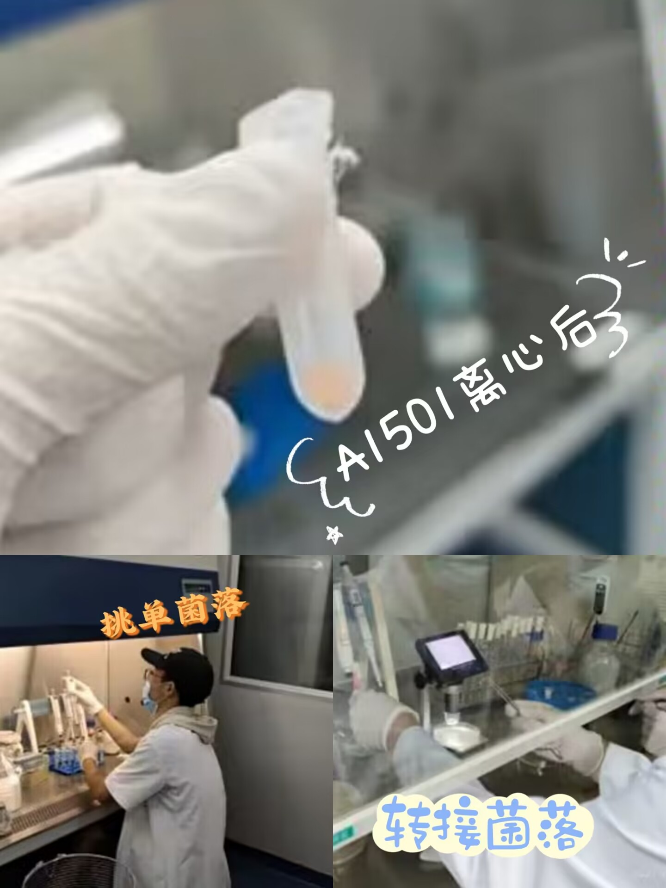
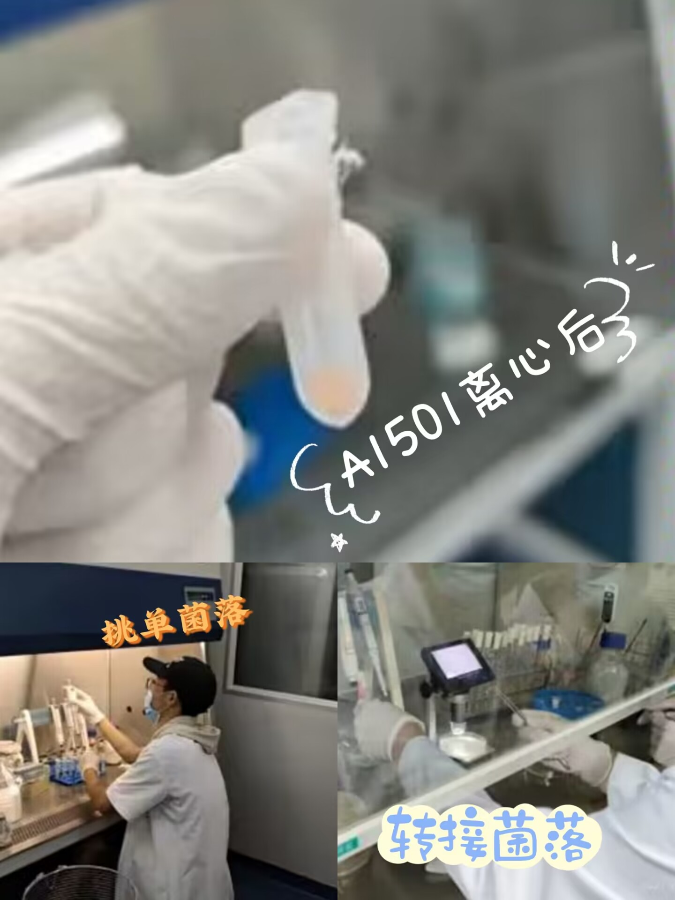

实验组
研究方向：
1.乳酸菌益生功能研究，2.联合固氮微生物的功能基因组学研究，3.微生物CRISPR系统研究与
CRISPR编辑载体构建。
实验一主要内容：
通过对施氏假单胞菌（Pseudomonas Schisterii）A1501中LuxR家族调控蛋白基因进行处理使其过度表达或者
不表达以探索LuxR家族调控蛋白基因对A1501菌中植物促生作用相关的生物学特性（如生物膜形成、趋化运动以及对
自身生长特性的影响等等）的调控作用，为植物促生菌P. stutzeri A1501的在农业生产上的更好应用提供科学依据
，同时也为P. stutzeri中QS系统的相关研究提供科学参考。
实验照片：
 

实验二主要内容：
乳酸菌分离筛选、乳酸菌抑菌实验、乳酸菌耐酸实验、乳酸菌耐胆盐实验、乳酸菌模拟胃液实验、乳酸菌模拟肠液、
乳酸菌药敏实验。
实验照片：